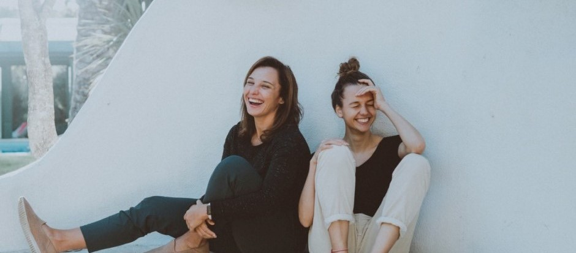

Trobades familiars d'adultes

Es tracta de trobades entre les persones adultes de la família i les acompanyants amb l'objectiu d'oferir suport. En la relació d'acompanyament a les adultes es busca la connexió, l'empatia, el seguiment i assessorament en els diferents aspectes de la criança.
Mirem de seguir el desig, la necessitat i la inquietud de la família, tot posant a la seva disposició recursos i experiència en processos d'aprenentatge, que inclouen l'àmbit acadèmic i integren els plans físic, emocional i mental, la pedagogia sistèmica, la gestió emocional i relacional, el desenvolupament evolutiu, la teoria de les intel·ligències, el desenvolupament psicomotriu, la vida intrauterina i la criança a partir del naixement.